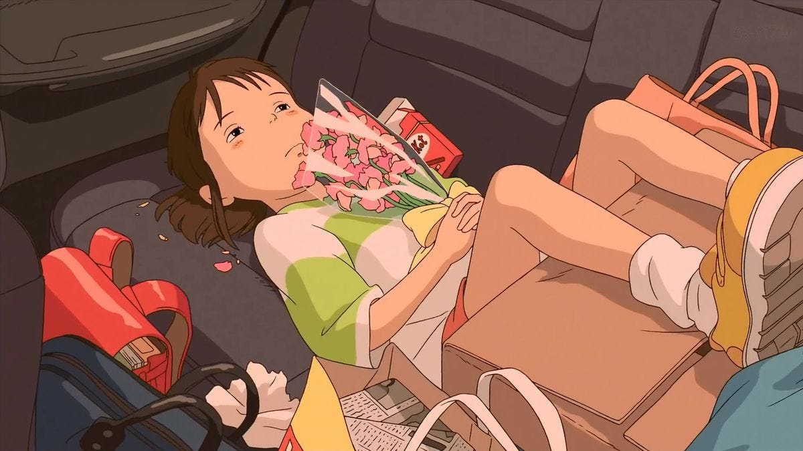
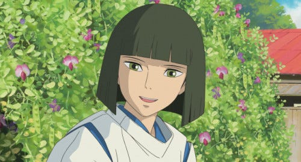

Spirited Away

Spirited away is a Japanese animated movie by Studio Ghibli under the direction of Hayao Miyazaki.
It talks about the main character, Chihiro also known as Sen, who is moving houses and accidentally
enters the spirited world. There she meets all kinds of spirits both good and bad as she goes on a
quest to return to her original world.
Chihiro

Background
- gets stuck in the spirit world/ kami
- Her parents turn into pigs
- she starts working in a bathhouse
- to find a way to save her parents
What I love
- Her personality is amazing
- I love her character developement
Haku

Background
- first appears as a 16 year old boy
- is actuallythousand year old river spirit
- helps Chihiro escape from the spirit world
- can take the form of a dragon
What I love
- He is my favorite character
- I love his character design
- I love his voice and personality
This is the link to the Spirited away Official website
Submitted by: Gill, Sarveen K.
🌟Thank you for reading!🌟